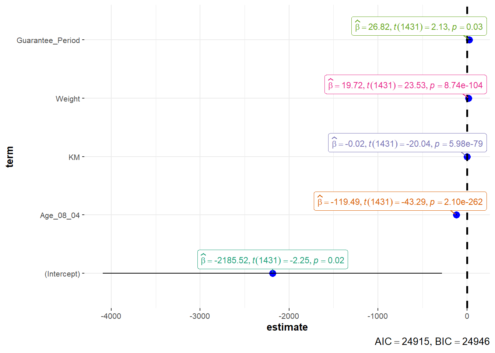
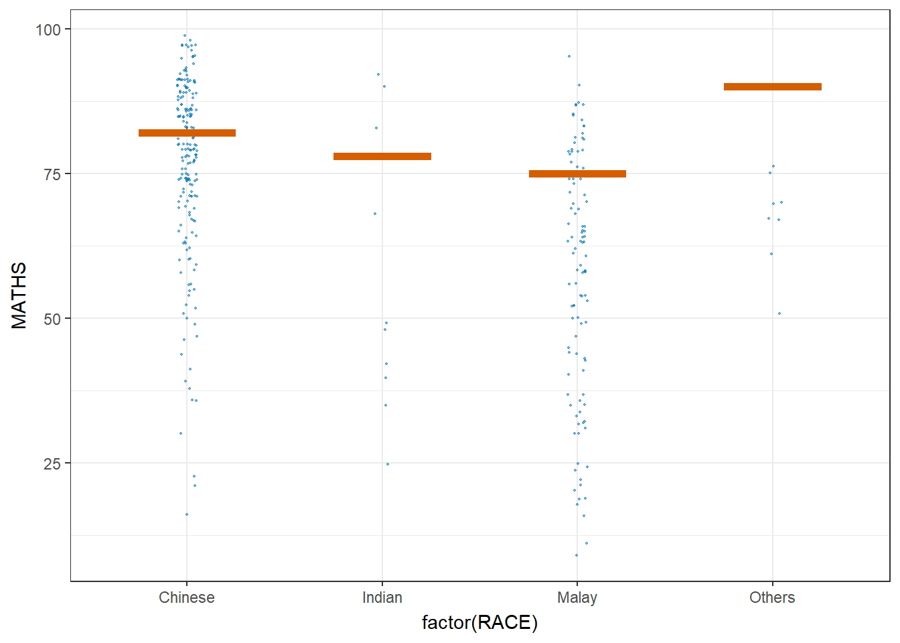
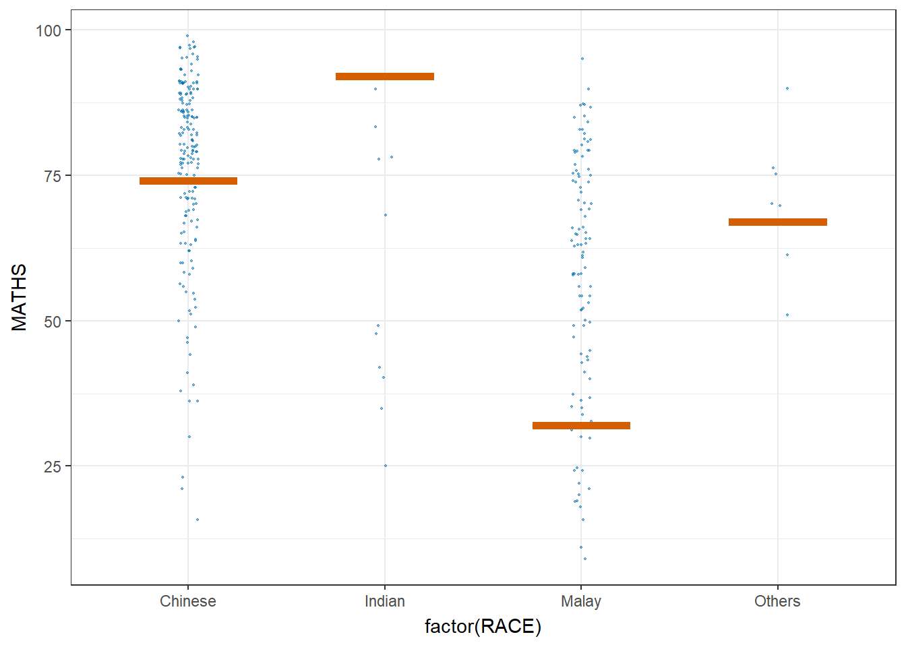

pacman::p_load(ggdist, ggridges, ggthemes,
colorspace, tidyverse)Hands-on Exercise 4 Visual Analytics
1. 1Learning Outcome
Visualising distribution is not new in statistical analysis. In chapter 1 we have shared with you some of the popular statistical graphics methods for visualising distribution are histogram, probability density curve (pdf), boxplot, notch plot and violin plot and how they can be created by using ggplot2. In this chapter, we are going to share with you two relatively new statistical graphic methods for visualising distribution, namely ridgeline plot and raincloud plot by using ggplot2 and its extensions.
1.2 Getting Started
1.2.1 Installing and loading the packages
For the purpose of this exercise, the following R packages will be used, they are:
tidyverse, a family of R packages for data science process,
ggridges, a ggplot2 extension specially designed for plotting ridgeline plots, and
ggdist for visualising distribution and uncertainty.
package 'distributional' successfully unpacked and MD5 sums checked package 'quadprog' successfully unpacked and MD5 sums checked package 'ggdist' successfully unpacked and MD5 sums checked The downloaded binary packages are in C:\Users\tskam\AppData\Local\Temp\RtmpcJX3aB\downloaded_packages package 'ggridges' successfully unpacked and MD5 sums checked The downloaded binary packages are in C:\Users\tskam\AppData\Local\Temp\RtmpcJX3aB\downloaded_packages1.2.2 Data import
For the purpose of this exercise, Exam_data.csv will be used.
exam <- read_csv("C:/lzc0313/ISSS608-VAA/Hands-on_Ex/Hands-on_Ex01/data/Exam_data.csv")##9.3 Visualising Distribution with Ridgeline Plot Ridgeline plot (sometimes called Joyplot) is a data visualisation technique for revealing the distribution of a numeric value for several groups. Distribution can be represented using histograms or density plots, all aligned to the same horizontal scale and presented with a slight overlap.
Figure below is a ridgelines plot showing the distribution of English score by class.
Notes
Ridgeline plots make sense when the number of group to represent is medium to high, and thus a classic window separation would take to much space. Indeed, the fact that groups overlap each other allows to use space more efficiently. If you have less than 5 groups, dealing with other distribution plots is probably better.
It works well when there is a clear pattern in the result, like if there is an obvious ranking in groups. Otherwise group will tend to overlap each other, leading to a messy plot not providing any insight.
1.3.1 Plotting ridgeline graph: ggridges method
There are several ways to plot ridgeline plot with R. In this section, you will learn how to plot ridgeline plot by using ggridges package.
ggridges package provides two main geom to plot gridgeline plots, they are: geom_ridgeline() and geom_density_ridges(). The former takes height values directly to draw the ridgelines, and the latter first estimates data densities and then draws those using ridgelines.
The ridgeline plot below is plotted by using geom_density_ridges().
ggplot(exam,
aes(x = ENGLISH,
y = CLASS)) +
geom_density_ridges(
scale = 3,
rel_min_height = 0.01,
bandwidth = 3.4,
fill = lighten("#7097BB", .3),
color = "white"
) +
scale_x_continuous(
name = "English grades",
expand = c(0, 0)
) +
scale_y_discrete(name = NULL, expand = expansion(add = c(0.2, 2.6))) +
theme_ridges()
1.3.2 Varying fill colors along the x axis
Sometimes we would like to have the area under a ridgeline not filled with a single solid color but rather with colors that vary in some form along the x axis. This effect can be achieved by using either geom_ridgeline_gradient() or geom_density_ridges_gradient(). Both geoms work just like geom_ridgeline() and geom_density_ridges(), except that they allow for varying fill colors. However, they do not allow for alpha transparency in the fill. For technical reasons, we can have changing fill colors or transparency but not both.
ggplot(exam,
aes(x = ENGLISH,
y = CLASS,
fill = stat(x))) +
geom_density_ridges_gradient(
scale = 3,
rel_min_height = 0.01) +
scale_fill_viridis_c(name = "Temp. [F]",
option = "C") +
scale_x_continuous(
name = "English grades",
expand = c(0, 0)
) +
scale_y_discrete(name = NULL, expand = expansion(add = c(0.2, 2.6))) +
theme_ridges()
1.3.3 Mapping the probabilities directly onto colour
Beside providing additional geom objects to support the need to plot ridgeline plot, ggridges package also provides a stat function called stat_density_ridges() that replaces stat_density() of ggplot2.
Figure below is plotted by mapping the probabilities calculated by using stat(ecdf) which represent the empirical cumulative density function for the distribution of English score.
ggplot(exam,
aes(x = ENGLISH,
y = CLASS,
fill = 0.5 - abs(0.5-stat(ecdf)))) +
stat_density_ridges(geom = "density_ridges_gradient",
calc_ecdf = TRUE) +
scale_fill_viridis_c(name = "Tail probability",
direction = -1) +
theme_ridges()
Important
It is important include the argument calc_ecdf = TRUE in stat_density_ridges().
1.3.4 Ridgeline plots with quantile lines
By using geom_density_ridges_gradient(), we can colour the ridgeline plot by quantile, via the calculated stat(quantile) aesthetic as shown in the figure below.
ggplot(exam,
aes(x = ENGLISH,
y = CLASS,
fill = factor(stat(quantile))
)) +
stat_density_ridges(
geom = "density_ridges_gradient",
calc_ecdf = TRUE,
quantiles = 4,
quantile_lines = TRUE) +
scale_fill_viridis_d(name = "Quartiles") +
theme_ridges()
Instead of using number to define the quantiles, we can also specify quantiles by cut points such as 2.5% and 97.5% tails to colour the ridgeline plot as shown in the figure below.
ggplot(exam,
aes(x = ENGLISH,
y = CLASS,
fill = factor(stat(quantile))
)) +
stat_density_ridges(
geom = "density_ridges_gradient",
calc_ecdf = TRUE,
quantiles = c(0.025, 0.975)
) +
scale_fill_manual(
name = "Probability",
values = c("#FF0000A0", "#A0A0A0A0", "#0000FFA0"),
labels = c("(0, 0.025]", "(0.025, 0.975]", "(0.975, 1]")
) +
theme_ridges()
1.4 Visualising Distribution with Raincloud Plot
Raincloud Plot is a data visualisation techniques that produces a half-density to a distribution plot. It gets the name because the density plot is in the shape of a “raincloud”. The raincloud (half-density) plot enhances the traditional box-plot by highlighting multiple modalities (an indicator that groups may exist). The boxplot does not show where densities are clustered, but the raincloud plot does!
In this section, you will learn how to create a raincloud plot to visualise the distribution of English score by race. It will be created by using functions provided by ggdist and ggplot2 packages.
1.4.1 Plotting a Half Eye graph
First, we will plot a Half-Eye graph by using stat_halfeye() of ggdist package.
This produces a Half Eye visualization, which is contains a half-density and a slab-interval.
ggplot(exam,
aes(x = RACE,
y = ENGLISH)) +
stat_halfeye(adjust = 0.5,
justification = -0.2,
.width = 0,
point_colour = NA)
Things to learn from the code chunk above
We remove the slab interval by setting .width = 0 and point_colour = NA.
1.4.2 Adding the boxplot with geom_boxplot()
Next, we will add the second geometry layer using geom_boxplot() of ggplot2. This produces a narrow boxplot. We reduce the width and adjust the opacity.
ggplot(exam,
aes(x = RACE,
y = ENGLISH)) +
stat_halfeye(adjust = 0.5,
justification = -0.2,
.width = 0,
point_colour = NA) +
geom_boxplot(width = .20,
outlier.shape = NA)
1.4.3 Adding the Dot Plots with stat_dots()
Next, we will add the third geometry layer using stat_dots() of ggdist package. This produces a half-dotplot, which is similar to a histogram that indicates the number of samples (number of dots) in each bin. We select side = “left” to indicate we want it on the left-hand side.
ggplot(exam,
aes(x = RACE,
y = ENGLISH)) +
stat_halfeye(adjust = 0.5,
justification = -0.2,
.width = 0,
point_colour = NA) +
geom_boxplot(width = .20,
outlier.shape = NA) +
stat_dots(side = "left",
justification = 1.2,
binwidth = .5,
dotsize = 2)
1.4.4 Finishing touch
Lastly, coord_flip() of ggplot2 package will be used to flip the raincloud chart horizontally to give it the raincloud appearance. At the same time, theme_economist() of ggthemes package is used to give the raincloud chart a professional publishing standard look.
ggplot(exam,
aes(x = RACE,
y = ENGLISH)) +
stat_halfeye(adjust = 0.5,
justification = -0.2,
.width = 0,
point_colour = NA) +
geom_boxplot(width = .20,
outlier.shape = NA) +
stat_dots(side = "left",
justification = 1.2,
binwidth = .5,
dotsize = 1.5) +
coord_flip() +
theme_economist()
2. Visual Statistical Analysis
2.1 Learning Outcome
In this hands-on exercise, you will gain hands-on experience on using:
ggstatsplot package to create visual graphics with rich statistical information,
performance package to visualise model diagnostics, and
parameters package to visualise model parameters
2.2 Visual Statistical Analysis with ggstatsplot
ggstatsplot is an extension of ggplot2 package for creating graphics with details from statistical tests included in the information-rich plots themselves.
To provide alternative statistical inference methods by default.
To follow best practices for statistical reporting. For all statistical tests reported in the plots, the default template abides by the APA gold standard for statistical reporting. For example, here are results from a robust t-test:
2.3 Getting Started
2.3.1 Installing and launching R packages
In this exercise, ggstatsplot and tidyverse will be used.
pacman::p_load(ggstatsplot, tidyverse,vctrs, dplyr)2.3.2 Importing data
exam <- read_csv("C:/lzc0313/ISSS608-VAA/Hands-on_Ex/Hands-on_Ex01/data/Exam_data.csv")# A tibble: 322 × 7 ID CLASS GENDER RACE ENGLISH MATHS SCIENCE <chr> <chr> <chr> <chr> <dbl> <dbl> <dbl> 1 Student321 3I Male Malay 21 9 15 2 Student305 3I Female Malay 24 22 16 3 Student289 3H Male Chinese 26 16 16 4 Student227 3F Male Chinese 27 77 31 5 Student318 3I Male Malay 27 11 25 6 Student306 3I Female Malay 31 16 16 7 Student313 3I Male Chinese 31 21 25 8 Student316 3I Male Malay 31 18 27 9 Student312 3I Male Malay 33 19 15 10 Student297 3H Male Indian 34 49 37 # ℹ 312 more rows
2.3.3 One-sample test: gghistostats() method
In the code chunk below, gghistostats() is used to to build an visual of one-sample test on English scores.
library(dplyr) # Load the updated dplyr package
library(ggstatsplot)
set.seed(1234)
gghistostats(
data = exam,
x = ENGLISH,
type = "bayes",
test.value = 60,
xlab = "English scores"
)
Default information: - statistical details - Bayes Factor - sample sizes - distribution summary
2.3.4 Unpacking the Bayes Factor
A Bayes factor is the ratio of the likelihood of one particular hypothesis to the likelihood of another. It can be interpreted as a measure of the strength of evidence in favor of one theory among two competing theories.
That’s because the Bayes factor gives us a way to evaluate the data in favor of a null hypothesis, and to use external information to do so. It tells us what the weight of the evidence is in favor of a given hypothesis.
When we are comparing two hypotheses, H1 (the alternate hypothesis) and H0 (the null hypothesis), the Bayes Factor is often written as B10. It can be defined mathematically as
- The Schwarz criterion is one of the easiest ways to calculate rough approximation of the Bayes Factor.
2.3.5 How to interpret Bayes Factor
A Bayes Factor can be any positive number. One of the most common interpretations is this one—first proposed by Harold Jeffereys (1961) and slightly modified by Lee and Wagenmakers in 2013:
2.3.6 Two-sample mean test: ggbetweenstats()
In the code chunk below, ggbetweenstats() is used to build a visual for two-sample mean test of Maths scores by gender.
ggbetweenstats(
data = exam,
x = GENDER,
y = MATHS,
type = "np",
messages = FALSE
)
Default information: - statistical details - Bayes Factor - sample sizes - distribution summary
2.3.7 Oneway ANOVA Test: ggbetweenstats() method
In the code chunk below, ggbetweenstats() is used to build a visual for One-way ANOVA test on English score by race.
ggbetweenstats(
data = exam,
x = RACE,
y = ENGLISH,
type = "p",
mean.ci = TRUE,
pairwise.comparisons = TRUE,
pairwise.display = "s",
p.adjust.method = "fdr",
messages = FALSE
)
“ns” → only non-significant
“s” → only significant
“all” → everything
2.3.8 Significant Test of Correlation: ggscatterstats()
In the code chunk below, ggscatterstats() is used to build a visual for Significant Test of Correlation between Maths scores and English scores.
ggscatterstats(
data = exam,
x = MATHS,
y = ENGLISH,
marginal = FALSE,
)
10.3.9 Significant Test of Association (Depedence) : ggbarstats() methods
In the code chunk below, the Maths scores is binned into a 4-class variable by using cut().
exam1 <- exam %>%
mutate(MATHS_bins =
cut(MATHS,
breaks = c(0,60,75,85,100))
)In this code chunk below ggbarstats() is used to build a visual for Significant Test of Association
ggbarstats(exam1,
x = MATHS_bins,
y = GENDER)
2.4 Visualising Models
In this section, you will learn how to visualise model diagnostic and model parameters by using parameters package.
- Toyota Corolla case study will be used. The purpose of study is to build a model to discover factors affecting prices of used-cars by taking into consideration a set of explanatory variables.
2.5 Getting Started
2.6 Installing and loading the required libraries
pacman::p_load(readxl, performance, parameters, see)2.6.1 Importing Excel file: readxl methods
In the code chunk below, read_xls() of readxl package is used to import the data worksheet of ToyotaCorolla.xls workbook into R.
car_resale <- read_xls("C:/lzc0313/ISSS608-VAAA/In-class_Ex/In-class_ex1/data/data/ToyotaCorolla.xls", "data")
car_resale# A tibble: 1,436 × 38
Id Model Price Age_08_04 Mfg_Month Mfg_Year KM Quarterly_Tax Weight
<dbl> <chr> <dbl> <dbl> <dbl> <dbl> <dbl> <dbl> <dbl>
1 81 TOYOTA … 18950 25 8 2002 20019 100 1180
2 1 TOYOTA … 13500 23 10 2002 46986 210 1165
3 2 TOYOTA … 13750 23 10 2002 72937 210 1165
4 3 TOYOTA… 13950 24 9 2002 41711 210 1165
5 4 TOYOTA … 14950 26 7 2002 48000 210 1165
6 5 TOYOTA … 13750 30 3 2002 38500 210 1170
7 6 TOYOTA … 12950 32 1 2002 61000 210 1170
8 7 TOYOTA… 16900 27 6 2002 94612 210 1245
9 8 TOYOTA … 18600 30 3 2002 75889 210 1245
10 44 TOYOTA … 16950 27 6 2002 110404 234 1255
# ℹ 1,426 more rows
# ℹ 29 more variables: Guarantee_Period <dbl>, HP_Bin <chr>, CC_bin <chr>,
# Doors <dbl>, Gears <dbl>, Cylinders <dbl>, Fuel_Type <chr>, Color <chr>,
# Met_Color <dbl>, Automatic <dbl>, Mfr_Guarantee <dbl>,
# BOVAG_Guarantee <dbl>, ABS <dbl>, Airbag_1 <dbl>, Airbag_2 <dbl>,
# Airco <dbl>, Automatic_airco <dbl>, Boardcomputer <dbl>, CD_Player <dbl>,
# Central_Lock <dbl>, Powered_Windows <dbl>, Power_Steering <dbl>, …Notice that the output object car_resale is a tibble data frame.
2.6.2 Multiple Regression Model using lm()
The code chunk below is used to calibrate a multiple linear regression model by using lm() of Base Stats of R.
model <- lm(Price ~ Age_08_04 + Mfg_Year + KM +
Weight + Guarantee_Period, data = car_resale)
model
Call:
lm(formula = Price ~ Age_08_04 + Mfg_Year + KM + Weight + Guarantee_Period,
data = car_resale)
Coefficients:
(Intercept) Age_08_04 Mfg_Year KM
-2.637e+06 -1.409e+01 1.315e+03 -2.323e-02
Weight Guarantee_Period
1.903e+01 2.770e+01 2.6.3 Model Diagnostic: checking for multicolinearity:
In the code chunk, check_collinearity() of performance package.
check_collinearity(model)# Check for Multicollinearity
Low Correlation
Term VIF VIF 95% CI Increased SE Tolerance Tolerance 95% CI
KM 1.46 [ 1.37, 1.57] 1.21 0.68 [0.64, 0.73]
Weight 1.41 [ 1.32, 1.51] 1.19 0.71 [0.66, 0.76]
Guarantee_Period 1.04 [ 1.01, 1.17] 1.02 0.97 [0.86, 0.99]
High Correlation
Term VIF VIF 95% CI Increased SE Tolerance Tolerance 95% CI
Age_08_04 31.07 [28.08, 34.38] 5.57 0.03 [0.03, 0.04]
Mfg_Year 31.16 [28.16, 34.48] 5.58 0.03 [0.03, 0.04]check_c <- check_collinearity(model)
plot(check_c)
2.6.4 Model Diagnostic: checking normality assumption
In the code chunk, check_normality() of performance package.
model1 <- lm(Price ~ Age_08_04 + KM +
Weight + Guarantee_Period, data = car_resale)check_n <- check_normality(model1)plot(check_n)
2.6.5 Model Diagnostic: Check model for homogeneity of variances
In the code chunk, check_heteroscedasticity() of performance package.
check_h <- check_heteroscedasticity(model1)plot(check_h)
2.6.6 Model Diagnostic: Complete check
We can also perform the complete by using check_model().
check_model(model1)
2.6.7 Visualising Regression Parameters: see methods
In the code below, plot() of see package and parameters() of parameters package is used to visualise the parameters of a regression model.
plot(parameters(model1))
2.6.8 Visualising Regression Parameters: ggcoefstats() methods
In the code below, ggcoefstats() of ggstatsplot package to visualise the parameters of a regression model.
ggcoefstats(model1,
output = "plot")
3 Visualising Uncertainty
3.1 Learning Outcome
Visualising uncertainty is relatively new in statistical graphics. In this chapter, you will gain hands-on experience on creating statistical graphics for visualising uncertainty. By the end of this chapter you will be able:
to plot statistics error bars by using ggplot2,
to plot interactive error bars by combining ggplot2, plotly and DT,
to create advanced by using ggdist, and
to create hypothetical outcome plots (HOPs) by using ungeviz package.
3.2 Getting Started
3.2.1 Installing and loading the packages
For the purpose of this exercise, the following R packages will be used, they are:
tidyverse, a family of R packages for data science process,
plotly for creating interactive plot,
gganimate for creating animation plot,
DT for displaying interactive html table,
crosstalk for for implementing cross-widget interactions (currently, linked brushing and filtering), and
ggdist for visualising distribution and uncertainty.
devtools::install_github("wilkelab/ungeviz")pacman::p_load(ungeviz, plotly, crosstalk,
DT, ggdist, ggridges,
colorspace, gganimate, tidyverse)3.2.2 Data import
For the purpose of this exercise, Exam_data.csv will be used.
exam <- read_csv("data/Exam_data.csv")3.3 Visualizing the uncertainty of point estimates: ggplot2 methods
A point estimate is a single number, such as a mean. Uncertainty, on the other hand, is expressed as standard error, confidence interval, or credible interval.
Important
- Don’t confuse the uncertainty of a point estimate with the variation in the sample
my_sum <- exam %>%
group_by(RACE) %>%
summarise(
n=n(),
mean=mean(MATHS),
sd=sd(MATHS)
) %>%
mutate(se=sd/sqrt(n-1))group_by()of dplyr package is used to group the observation by RACE,summarise()is used to compute the count of observations, mean, standard deviationmutate()is used to derive standard error of Maths by RACE, andthe output is save as a tibble data table called my_sum.
Next, the code chunk below will be used to display my_sum tibble data frame in an html table format.
knitr::kable(head(my_sum), format = 'html')| RACE | n | mean | sd | se |
|---|---|---|---|---|
| Chinese | 193 | 76.50777 | 15.69040 | 1.132357 |
| Indian | 12 | 60.66667 | 23.35237 | 7.041005 |
| Malay | 108 | 57.44444 | 21.13478 | 2.043177 |
| Others | 9 | 69.66667 | 10.72381 | 3.791438 |
3.3.1 Plotting standard error bars of point estimates
Now we are ready to plot the standard error bars of mean maths score by race as shown below.
ggplot(my_sum) +
geom_errorbar(
aes(x=RACE,
ymin=mean-se,
ymax=mean+se),
width=0.2,
colour="black",
alpha=0.9,
size=0.5) +
geom_point(aes
(x=RACE,
y=mean),
stat="identity",
color="red",
size = 1.5,
alpha=1) +
ggtitle("Standard error of mean maths score by rac")
Note
Things to learn from the code chunk above
The error bars are computed by using the formula mean+/-se.
For geom_point(), it is important to indicate stat=“identity”.
3.3.2 Plotting confidence interval of point estimates
Instead of plotting the standard error bar of point estimates, we can also plot the confidence intervals of mean maths score by race.
ggplot(my_sum) +
geom_errorbar(
aes(x=reorder(RACE, -mean),
ymin=mean-1.96*se,
ymax=mean+1.96*se),
width=0.2,
colour="black",
alpha=0.9,
size=0.5) +
geom_point(aes
(x=RACE,
y=mean),
stat="identity",
color="red",
size = 1.5,
alpha=1) +
labs(x = "Maths score",
title = "95% confidence interval of mean maths score by race")
3.3.3 Visualizing the uncertainty of point estimates with interactive error bars
In this section, you will learn how to plot interactive error bars for the 99% confidence interval of mean maths score by race as shown in the figure below.
shared_df = SharedData$new(my_sum)
bscols(widths = c(4,8),
ggplotly((ggplot(shared_df) +
geom_errorbar(aes(
x=reorder(RACE, -mean),
ymin=mean-2.58*se,
ymax=mean+2.58*se),
width=0.2,
colour="black",
alpha=0.9,
size=0.5) +
geom_point(aes(
x=RACE,
y=mean,
text = paste("Race:", `RACE`,
"<br>N:", `n`,
"<br>Avg. Scores:", round(mean, digits = 2),
"<br>95% CI:[",
round((mean-2.58*se), digits = 2), ",",
round((mean+2.58*se), digits = 2),"]")),
stat="identity",
color="red",
size = 1.5,
alpha=1) +
xlab("Race") +
ylab("Average Scores") +
theme_minimal() +
theme(axis.text.x = element_text(
angle = 45, vjust = 0.5, hjust=1)) +
ggtitle("99% Confidence interval of average /<br>maths scores by race")),
tooltip = "text"),
DT::datatable(shared_df,
rownames = FALSE,
class="compact",
width="100%",
options = list(pageLength = 10,
scrollX=T),
colnames = c("No. of pupils",
"Avg Scores",
"Std Dev",
"Std Error")) %>%
formatRound(columns=c('mean', 'sd', 'se'),
digits=2))3.4 Visualising Uncertainty: ggdist package
ggdist is an R package that provides a flexible set of ggplot2 geoms and stats designed especially for visualising distributions and uncertainty.
It is designed for both frequentist and Bayesian uncertainty visualization, taking the view that uncertainty visualization can be unified through the perspective of distribution visualization:
for frequentist models, one visualises confidence distributions or bootstrap distributions (see vignette(“freq-uncertainty-vis”));
for Bayesian models, one visualises probability distributions (see the tidybayes package, which builds on top of ggdist).
3.4.1 Visualizing the uncertainty of point estimates: ggdist methods
In the code chunk below, stat_pointinterval() of ggdist is used to build a visual for displaying distribution of maths scores by race.
exam %>%
ggplot(aes(x = RACE,
y = MATHS)) +
stat_pointinterval() +
labs(
title = "Visualising confidence intervals of mean math score",
subtitle = "Mean Point + Multiple-interval plot")
For example, in the code chunk below the following arguments are used:
.width = 0.95
.point = median
.interval = qi
exam %>%
ggplot(aes(x = RACE, y = MATHS)) +
stat_pointinterval(.width = 0.95,
.point = median,
.interval = qi) +
labs(
title = "Visualising confidence intervals of median math score",
subtitle = "Median Point + Multiple-interval plot")
3.4.2 Visualizing the uncertainty of point estimates: ggdist methods
exam %>%
ggplot(aes(x = RACE,
y = MATHS)) +
stat_pointinterval(
show.legend = FALSE) +
labs(
title = "Visualising confidence intervals of mean math score",
subtitle = "Mean Point + Multiple-interval plot")
Gentle advice: This function comes with many arguments, students are advised to read the syntax reference for more detail.
3.4.3 Visualizing the uncertainty of point estimates: ggdist methods
In the code chunk below, stat_gradientinterval() of ggdist is used to build a visual for displaying distribution of maths scores by race.
exam %>%
ggplot(aes(x = RACE,
y = MATHS)) +
stat_gradientinterval(
fill = "skyblue",
show.legend = TRUE
) +
labs(
title = "Visualising confidence intervals of mean math score",
subtitle = "Gradient + interval plot")
Gentle advice: This function comes with many arguments, students are advised to read the syntax reference for more detail.
3.5 Visualising Uncertainty with Hypothetical Outcome Plots (HOPs)
Step 1: Installing ungeviz package
devtools::install_github("wilkelab/ungeviz")library(ungeviz)ggplot(data = exam,
(aes(x = factor(RACE), y = MATHS))) +
geom_point(position = position_jitter(
height = 0.3, width = 0.05),
size = 0.4, color = "#0072B2", alpha = 1/2) +
geom_hpline(data = sampler(25, group = RACE), height = 0.6, color = "#D55E00") +
theme_bw() +
# `.draw` is a generated column indicating the sample draw
transition_states(.draw, 1, 3)
3.6 Visualising Uncertainty with Hypothetical Outcome Plots (HOPs)
ggplot(data = exam,
(aes(x = factor(RACE),
y = MATHS))) +
geom_point(position = position_jitter(
height = 0.3,
width = 0.05),
size = 0.4,
color = "#0072B2",
alpha = 1/2) +
geom_hpline(data = sampler(25,
group = RACE),
height = 0.6,
color = "#D55E00") +
theme_bw() +
transition_states(.draw, 1, 3)